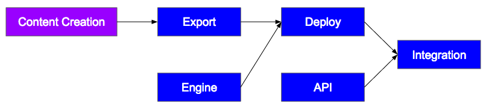
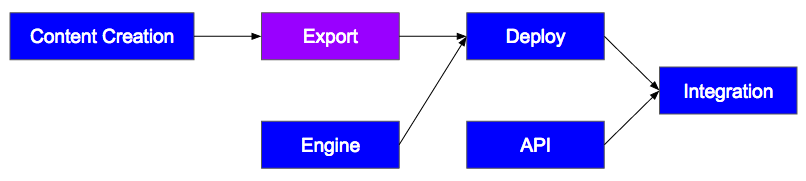
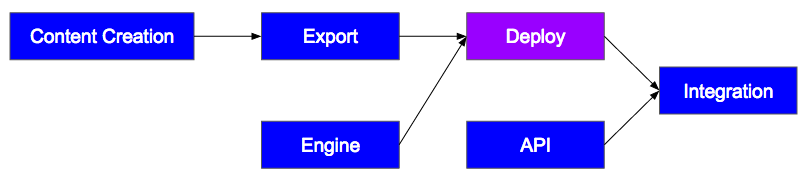
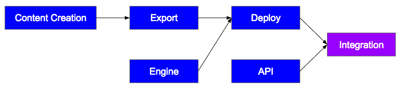
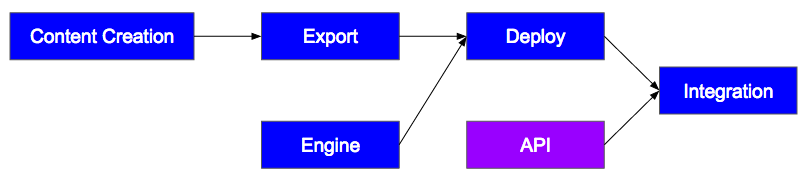
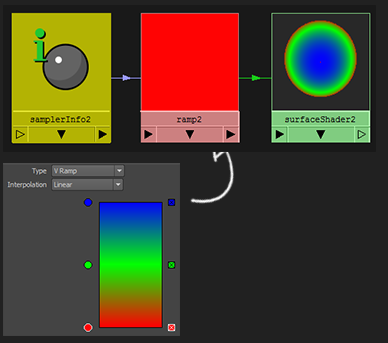
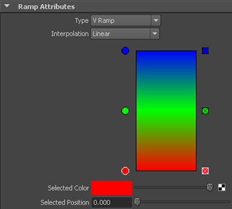
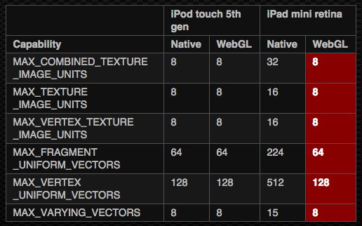

WebGL in Production
Content, Rendering and Integration in the BioDigital Human
Tarek Sherif
BioDigital
Goals
- Interactive 3D to make anatomical content engaging
-
Move beyond the anatomy atlas
- Tell stories
- Bring content to life
- Map data to and from 3D models
- Make it widely accessible through the web (including mobile!)
The BioDigital Human
-
3D content library
- 5000+ anatomy objects
- 500+ health conditions
-
Rendering engine built on SceneJS
- User-created annotations and custom views
- API for embedding Human content into external websites
The BioDigital Human
-
Key clients
- Medical device manufacturers
- Pharmaceutical
- Educational
- Medical students
Why WebGL?
-
Pros:
-
It's everywhere!
- Use HTML/CSS/JavaScript for easy UI
- Integrate into client web sites
- Leverage existing web services
Why WebGL?
-
Cons:
-
It's everywhere!
- As long as you make it work!
-
JavaScript!!!
- Common JS patterns are bad for performance
object.transform({
rotate: {
axis: vec1.cross(vec2).normalize(),
angle: Math.PI / 4
}
})
WebGL in Production
- Artists create models and animate them

WebGL in Production
-
Export tool converts modeling format to runtime format that the WebGL engine can use efficiently
- Meshes as binary arrays
- Shader graphs as materials with known properties
- Animations as transforms and morph targets

WebGL in Production
- Deploy engine and content to our servers making them available to everyone

WebGL in Production
- Embed an iFrame with Human content in your page

WebGL in Production
- Manipulate scene in the iFrame through a JavaScript API

WebGL in Production
-
Key challenges:
- Content must be downloaded so its size should be limited
-
Running ubiquitously means dealing with limitations of low-end devices:
- Memory and GPU limitations
- Amplifies importance of optimization
- But don't want to sacrifice quality on capable devices!
- Making 3D navigation and concepts approachable to a general audience
Content
- Meshes built using Maya and ZBrush
- Textures: color, normal, specular, alpha
Content
- Animation:
- Tweens on transforms, textures, opacity, etc.
- Morph targets for more complex animations
- Linear and Bezier interpolation
Content
- Accuracy:
- Consult anatomical atlases and texts
- Collaborate with medical professionals
Content Challenges
-
SIZE!
- Artists want it beautiful: big textures, detailed geometry
- Engineers want it to not crash on an iPhone
- Tension between anatomical detail and application stability
Content Challenges
-
Pipeline issues
- Artists (mostly) don't write code
- Have to map Maya properties or structures to GL variables and GLSL code
Example: Maya Ramp Node for Fresnel Effects
- Maya creates Fresnel effects using the general-purpose ramp node


Example: Maya Ramp Node for Fresnel Effects
- Maya ramp node:
- Arbitrary gradient with unlimited stops
- Color inputs can be textures
- Interpolation factor can be anything
Example: Maya Ramp Node for Fresnel Effects
- Standard Fresnel equation
float fresnel(eyeVec, worldNormal, color1, color2, bias, scale, power) {
float facingRatio = dot(eyeVec, worldNormal);
float f = bias + scale * pow(1.0 - facingRatio, power);
return mix(color1, color2, f);
}
Our Solution
-
Limit Maya ramp node to:
- Two color stops
- No texture input (might be able to add this later)
- Interpolation factor limited to facing ratio
-
Extend fresnel function to accept two biases:
- Center and edge biases (map to ramp node color stops)
Our Solution
float fresnel(vec3 viewDirection, vec3 worldNormal, float edgeBias, float centerBias, float power) {
float fr = abs(dot(viewDirection, worldNormal));
float finalFr = clamp((fr - edgeBias) / (centerBias - edgeBias), 0.0, 1.0);
return pow(finalFr, power);
}
Rendering
-
Navigating anatomical content is difficult
- Deeply nested
- Hierarchical (did the user click on arm or hand or finger?)
Rendering
-
Focus on giving users ways to view, emphasize, interact with information of interest:
- Highlight object
- Highlight region (defined by texture)
- Dissect (remove an object)
- Isolate (remove all other objects)
- Transparency
- Annotations
- (+ text, audio, video, etc.)
Rendering
-
Some things are simple:
- Highlight object: pick object, blend with highlight color in the fragment shader
-
Some things are less so:
- Annotations: map 3D point to 2D canvas position, manipulate DOM elements, check occlusion, follow morphing geometry
Rendering Challenges
-
Mobile!
- Rendering performance and memory can be severely limited on mobile devices
-
Possible to query some properties:
- Variable limits (uniforms, varyings, texture units)
- Shader precision
-
Not others:
Rendering Challenges

Working with mobile
-
Shader Precision
- On desktop mediump and highp tend to be the same
- On mobile, not so
Shader Precision
-
SceneJS used to set float precision to mediump in both the vertex and fragment shaders
precision mediump float;
Working with mobile
-
Variable limits
- Hardest limit to deal with so far is the limit on varyings (8!)
- Limit on texture units (8 again!) uncovered a bug in SceneJS bookkeeping
Variable limits: Varyings
-
SceneJS used to calculate the light vector and distance for each light in the vertex shader, pass to fragment shader in a varying
- Not hard to hit limit of 8 when using multiple lights
SCENEJS_vViewLightVecAndDist0 = vec4(tmpVec3, length(SCENEJS_uLightPos0 - worldVertex.xyz));
// ...
SCENEJS_vViewLightVecAndDist1 = vec4(tmpVec3, length(SCENEJS_uLightPos1 - worldVertex.xyz));
Variable limits: Texture units
-
SceneJS used to cycle through texture units for binding, assuming there would always be at least 10
if (frameCtx.textureUnit > 10) {
frameCtx.textureUnit = 0;
}
Solution
SceneJS.WEBGL_INFO.MAX_VARYING_VECTORS = gl.getParameter(gl.MAX_VARYING_VECTORS);
SceneJS.WEBGL_INFO.MAX_TEXTURE_UNITS = gl.getParameter(gl.MAX_COMBINED_TEXTURE_IMAGE_UNITS);
if (gl.getShaderPrecisionFormat(gl.FRAGMENT_SHADER, gl.HIGH_FLOAT).precision > 0) {
SceneJS.WEBGL_INFO.FS_MAX_FLOAT_PRECISION = "highp";
} else if (gl.getShaderPrecisionFormat(gl.FRAGMENT_SHADER, gl.MEDIUM_FLOAT).precision > 0) {
SceneJS.WEBGL_INFO.FS_MAX_FLOAT_PRECISION = "mediump";
} else {
SceneJS.WEBGL_INFO.FS_MAX_FLOAT_PRECISION = "lowp";
}
Solution
frameCtx.textureUnit = (frameCtx.textureUnit + 1) % SceneJS.WEBGL_INFO.MAX_TEXTURE_UNITS;
var src = [
"precision " + SceneJS.WEBGL_INFO.FS_MAX_FLOAT_PRECISION + " float;"
];
Solution
- For the varyings, we moved light vector calculations to the fragment shader
- Arguably less performant, but our tests show the effect to be negligible in practice
Human API
-
Embed Human content in an external web page through an iFrame
-
Basic interactions built-in
- Mouse movement
- Dissection, highlight, annotate, etc.
- UI can be customized through URL parameters
Human API
-
For more customized interactions, use the JavaScript API
- Communicates with iFrame using the window messaging API
var human = new HumanAPI.Human("iFrameID");
human.camera.flyTo({
eye: { z: -25 },
velocity: 20
});
human.pick.on("picked", function(e) {
console.log(e.worldPos);
});
API Challenges
- Communication!
- Documentation
- Tutorials
- Support
-
Want to make everything we've discussed approachable to the average web developer
- 3D navigation concepts
- Anatomical concepts
- Architecture of the Human